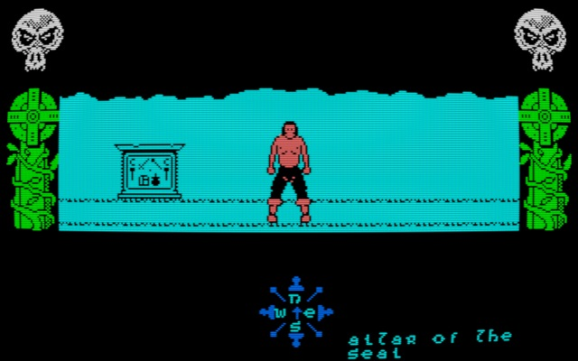

An update on video progress and thoughts on future posts…
Clearly my original plan on doing video reviews for all 21 SNES games that appear on the SNES Mini hasn’t happened, instead I’ve been giving each game a mini-review post here. I’ve got some ground to cover if I plan on talking about the other 19 games before it launches at the end of the month but it’ll be fun to see how many I manage to cover.
I do plan on doing a video review of the SNES Mini when it launches in which I’ll no doubt cover each game briefly as well as the machine itself. I do want to start talking about other retro systems and games as well, especially the home computers and systems I grew up with.
I’ve been creating some motion graphic templates for my videos which has definitely had a bit of a learning curve. It feels like it’s taking me ages to put my first video together but I’m hopeful I’ll be happy with what I put out and future ones will have a much quicker turnaround.

I’m restructuring the script I’d written about Gargoyle Games to be more about their adventure games Tír na nòg, Dun Darach and Marsport rather than the company as a whole. While I like the thought of doing documentary-style content, I’d like them to contain information that’s not just regurgitated from common public sources. As such I feel like talking about the games in a mini-review and childhood thoughts format will be more interesting.
I’m still wanting do do some kind of informal casual let’s play series too, ideally something meaty that I’m not too familiar with. The SSI Gold Box titles are something I’ve wanted to play through for a long time but presentation-wise they are a challenge. As old PC titles the audio is predominantly PC Speaker bleeps and bloops with no music to speak of.
They also refer to the manuals/journals frequently so displaying that info poses an issue. This is something I’ll be putting some thought into as there are a lot of older PC titles and DRPGs I’d like to play through.